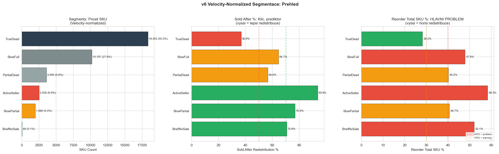
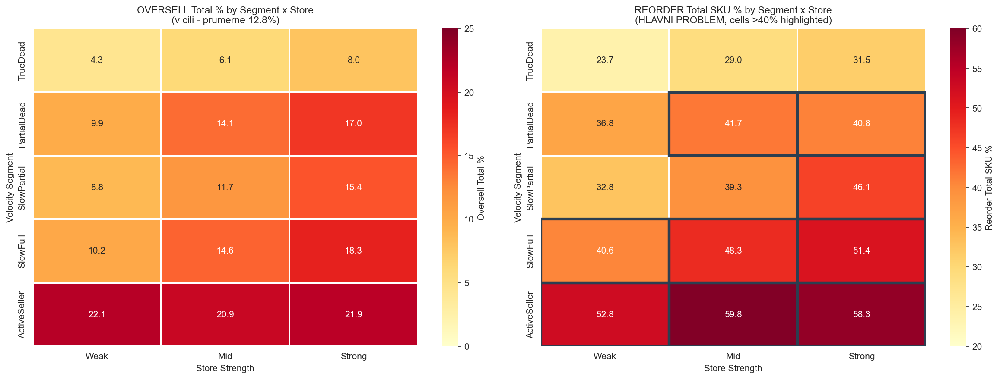
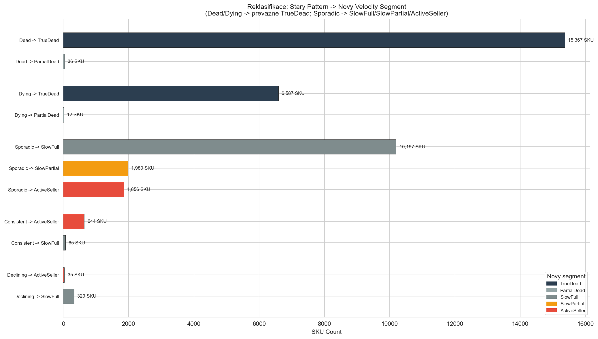
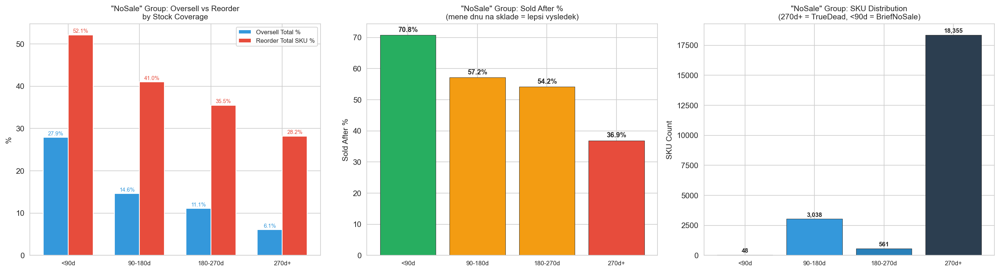
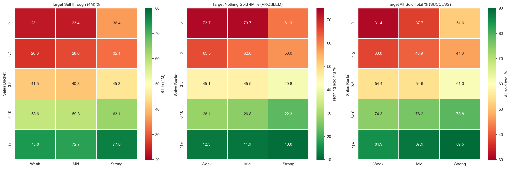
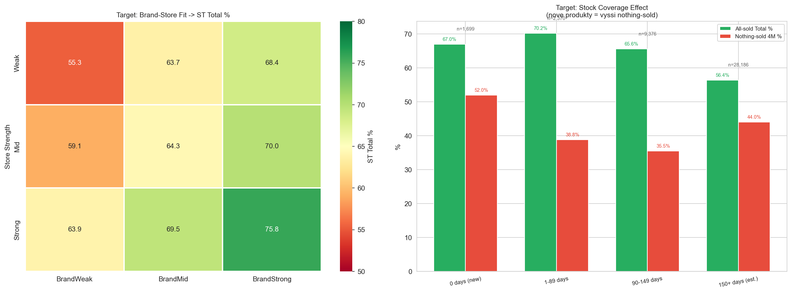
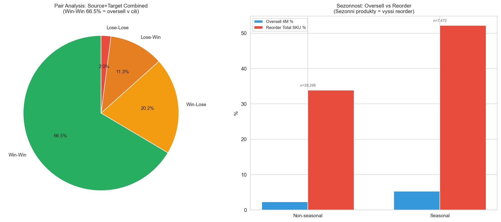
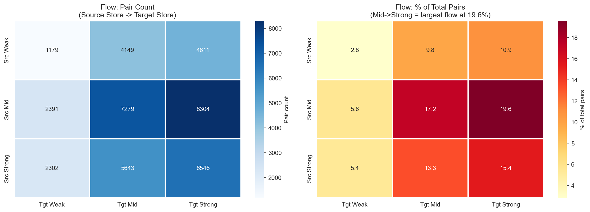

Consolidated Findings v6: SalesBased MinLayers (Velocity-Normalized) v6
CalculationId=233 | ApplicationDate: 2025-07-13 | Generated: 2026-03-22 16:03
v6 KEY INNOVATION: Velocity-normalized sales = Sales_12M / DaysInStock_12M x 30 (mesicni rate).
Nahradi stary Pattern (Dead/Dying/Sporadic/Consistent/Declining) presnejsimi segmenty
ktere zohlednuji jak prodejni aktivitu, tak dostupnost zasob.
"Sold after redistribution %" je silny prediktor uspechu.
Oversell v cili (3.0%). Reorder je hlavni problem (34.1% qty).
Oversell 4M je pouze 3.0% (1,317 SKU, 1,464 qty). Reorder: 13,841 SKU (37.6%), 16,615 kusu (34.1% objemu).
Velocity normalizace odhaluje skryte segmenty: 50% je TrueDead (36.9% sold_after) vs 6.9% ActiveSeller (93.8% sold_after).
v6 ZMENA: Velocity = Sales_12M / DaysInStock_12M x 30. Produkty s nulovym prodejem ale kracejsi dobou na sklade
(napr. <90 dni) jsou oddeleny od TrueDead do BriefNoSale. Sporadic je rozdelen na SlowFull, SlowPartial a ActiveSeller
podle skutecne prodejni rychlosti normalizovane na dostupnost.
1. Overview
42,404
Redistribution pairs
48,754
Total redistributed pcs
Source: Celkove metriky - 4M a total
| Metric | 4 months | Total (~9M) |
|---|
| Total redistributed | 48,754 pcs | 48,754 pcs |
| Oversell (SKU) | 1,317 SKU (3.6%) | 4,718 SKU (12.8%) |
| Oversell (qty) | 1,464 qty (3.0%) | 5,578 qty (11.4%) |
| Reorder (SKU) | 7,087 SKU (19.3%) | 13,841 SKU (37.6%) |
| Reorder (qty) | 7,980 qty (16.4%) | 16,615 qty (34.1%) |
Oversell v cili (3.0%). Reorder je hlavni problem (37.6% SKU, 34.1% qty).
Cil je snizit reorder o 10-15%.
2. Velocity-Normalized Segmentace NEW v6
Velocity = Sales_12M / DaysInStock_12M x 30 (mesicni rate normalizovana na dostupnost).
Odhaluje skryte segmenty, ktere stary Pattern nevidel.

| Segment | SKU | Podil | Redist qty | Oversell Total % |
Reorder Total SKU % | Sold After % | Avg Days in Stock |
|---|
| TrueDead | 18,355 | 50.0% | 22,260 | 6.1% | 28.2% | 36.9% | 358d |
| SlowFull | 10,197 | 27.8% | 13,511 | 15.1% | 47.9% | 64.7% | 347d |
| PartialDead | 3,599 | 9.8% | 4,664 | 14.0% | 40.2% | 56.8% | 172d |
| ActiveSeller | 2,535 | 6.9% | 5,151 | 21.6% | 58.3% | 93.8% | 293d |
| SlowPartial | 1,980 | 5.4% | 3,035 | 12.7% | 40.7% | 76.9% | 188d |
| BriefNoSale | 48 | 0.1% | 61 | 27.9% | 52.1% | 70.8% | 60d |
Klicovy insight: "Sold After %" je silny prediktor. ActiveSeller ma 93.8% sold_after
ale take 58.3% reorder - tyto produkty se rychle prodaji a potrebuji doplneni.
TrueDead ma jen 36.9% sold_after a 28.2% reorder - nizke riziko.
2.1 Segment x Store Detail (15 segmentu)

| Segment | Store | SKU | Oversell Total % |
Reorder Total SKU % | Sold After % | Redist qty |
|---|
| TrueDead | Weak | 5,227 | 4.3% | 23.7% | 32.6% | 6,238 |
| TrueDead | Mid | 8,206 | 6.1% | 29.0% | 37.2% | 10,026 |
| TrueDead | Strong | 4,922 | 8.0% | 31.5% | 40.8% | 5,996 |
| PartialDead | Weak | 939 | 9.9% | 36.8% | 48.8% | 1,124 |
| PartialDead | Mid | 1,599 | 14.1% | 41.7% | 57.8% | 2,056 |
| PartialDead | Strong | 1,061 | 17.0% | 40.8% | 62.2% | 1,484 |
| SlowPartial | Weak | 415 | 8.8% | 32.8% | 71.1% | 617 |
| SlowPartial | Mid | 773 | 11.7% | 39.3% | 72.6% | 1,151 |
| SlowPartial | Strong | 792 | 15.4% | 46.1% | 84.2% | 1,267 |
| SlowFull | Weak | 2,060 | 10.2% | 40.6% | 54.9% | 2,614 |
| SlowFull | Mid | 4,468 | 14.6% | 48.3% | 62.8% | 5,927 |
| SlowFull | Strong | 3,669 | 18.3% | 51.4% | 72.6% | 4,970 |
| ActiveSeller | Weak | 176 | 22.1% | 52.8% | 90.3% | 308 |
| ActiveSeller | Mid | 664 | 20.9% | 59.8% | 89.0% | 1,356 |
| ActiveSeller | Strong | 1,695 | 21.9% | 58.3% | 96.0% | 3,487 |
| TOTAL | 36,666 |
- | 48,621 |
MUST RAISE ML (reorder_tot_sku >50%): ActiveSeller+Weak (52.8%), ActiveSeller+Mid (59.8%),
ActiveSeller+Strong (58.3%), SlowFull+Strong (51.4%), BriefNoSale (52.1%).
LOW RISK segmenty: TrueDead+Weak (23.7% reorder, 32.6% sold_after) - bezpecne pro ML=1.
3. Reklasifikace: Stary Pattern -> Novy Segment NEW v6

| Stary Pattern | Novy Segment | SKU |
|---|
| Dead | TrueDead | 15,367 |
| Dead | PartialDead | 36 |
| Dying | TrueDead | 6,587 |
| Dying | PartialDead | 12 |
| Sporadic | SlowFull | 10,197 |
| Sporadic | SlowPartial | 1,980 |
| Sporadic | ActiveSeller | 1,856 |
| Consistent | ActiveSeller | 644 |
| Consistent | SlowFull | 65 |
| Declining | ActiveSeller | 35 |
| Declining | SlowFull | 329 |
Klicove zmeny:
- Dead (15,403) -> prevazne TrueDead (15,367) + 36 PartialDead (mely kratkou dobu na sklade)
- Dying (6,599) -> prevazne TrueDead (6,587) + 12 PartialDead
- Sporadic (14,033) -> rozdeleno na SlowFull (10,197), SlowPartial (1,980), ActiveSeller (1,856)
- Consistent (709) -> prevazne ActiveSeller (644) + 65 SlowFull (nizka velocity ale konzistentni)
- Declining (364) -> SlowFull (329) + ActiveSeller (35)
4. Stock Coverage Effect na "NoSale" Group NEW v6
Produkty bez prodeje v 12M maji ruzne chovani podle doby na sklade. Velocity normalizace
toto odhaluje - kratka doba na sklade neznamena "dead" ale "nedostatecna data".

| Stock Coverage | SKU | Redist qty | Oversell Total % |
Reorder Total SKU % | Sold After % |
|---|
| <90d | 48 | 61 | 27.9% | 52.1% | 70.8% |
| 90-180d | 3,038 | 3,829 | 14.6% | 41.0% | 57.2% |
| 180-270d | 561 | 835 | 11.1% | 35.5% | 54.2% |
| 270d+ | 18,355 | 22,260 | 6.1% | 28.2% | 36.9% |
<90 dnu na sklade (BriefNoSale, 48 SKU): 70.8% sold_after, 52.1% reorder - premalo dat,
ale prekvapivy uspechu. 270d+ (TrueDead, 18,355 SKU): jen 36.9% sold_after, 28.2% reorder.
Kratsi doba na sklade = lepsi vysledek redistribuce.
5. Source + Target: Sila predajni (decily)

| Metric | D1 (Weak) | D10 (Strong) | Trend |
|---|
| Source Oversell 4M | 1.9% | 4.5% | Oversell je v cili ve vsech decilech |
| Source Reorder Total | 24.0% | 38.6% | Silne predajne = vyssi reorder riziko |
| Target All-Sold Total | 48.3% | 70.1% | Silne predajne prodaji vse |
| Target Nothing-Sold | 32.1% | 13.7% | Slabe predajny = vice zaseklych zbozi |
6. Target: Sell-through analyza (15 segmentu)
6.1 Store Strength x Sales Bucket

| SalesBucket | Store | SKU | ST 4M % | ST Total % |
Nothing-sold 4M % | All-sold Total % |
|---|
| 0 | Weak | 137 | 23.1% | 34.7% | 73.7% | 31.4% |
| 0 | Mid | 334 | 23.4% | 41.5% | 73.7% | 37.7% |
| 0 | Strong | 252 | 36.4% | 53.6% | 61.1% | 51.6% |
| 1-2 | Weak | 1,966 | 26.3% | 47.2% | 65.5% | 38.0% |
| 1-2 | Mid | 4,493 | 28.6% | 51.2% | 62.0% | 40.9% |
| 1-2 | Strong | 3,622 | 32.1% | 56.4% | 58.0% | 47.0% |
| 3-5 | Weak | 2,601 | 41.5% | 65.8% | 45.1% | 54.4% |
| 3-5 | Mid | 7,765 | 40.8% | 66.0% | 45.5% | 54.6% |
| 3-5 | Strong | 9,017 | 45.3% | 71.7% | 40.8% | 61.0% |
| 6-10 | Weak | 886 | 58.6% | 82.2% | 28.1% | 74.3% |
| 6-10 | Mid | 3,347 | 59.3% | 84.3% | 26.8% | 76.2% |
| 6-10 | Strong | 4,859 | 63.1% | 86.2% | 22.3% | 78.8% |
| 11+ | Weak | 179 | 73.8% | 92.0% | 12.3% | 84.9% |
| 11+ | Mid | 815 | 72.7% | 93.4% | 11.9% | 87.9% |
| 11+ | Strong | 1,358 | 77.0% | 93.9% | 10.8% | 89.5% |
11+ sales bucket = vyborny target: 84.9-89.5% all-sold, nothing-sold jen 10.8-12.3%.
6.2 Brand-Store Fit + Stock Coverage NEW v6

| Store | BrandFit | SKU | ST Total % | Nothing-sold 4M % |
|---|
| Weak | BrandWeak | 2,448 | 55.3% | 54.9% |
| Weak | BrandMid | 1,152 | 63.7% | 49.3% |
| Weak | BrandStrong | 2,169 | 68.4% | 42.4% |
| Mid | BrandWeak | 3,623 | 59.1% | 53.2% |
| Mid | BrandMid | 3,744 | 64.3% | 47.6% |
| Mid | BrandStrong | 9,387 | 70.0% | 41.1% |
| Strong | BrandWeak | 1,746 | 63.9% | 47.3% |
| Strong | BrandMid | 2,590 | 69.5% | 42.2% |
| Strong | BrandStrong | 14,772 | 75.8% | 35.4% |
6.3 Target Stock Coverage Effect NEW v6
| Stock Coverage | SKU | ST Total % | Nothing-sold 4M % | All-sold Total % |
|---|
| 0 days (new) | 1,699 | 67.2% | 52.0% | 67.0% |
| 1-89 days | 2,370 | 74.2% | 38.8% | 70.2% |
| 90-149 days | 9,376 | 74.7% | 35.5% | 65.6% |
| 150+ days (est.) | 28,186 | 67.1% | 44.0% | 56.4% |
Nove produkty (0 dnu) maji nejvyssi nothing-sold (52.0%) ale prekvapive dobry ST total (67.2%).
Nejlepsi vysledky: 1-89 dnu (ST 74.2%, all-sold 70.2%). 150+ dnu paradoxne horsi (ST 67.1%) -
etablovane produkty ktere uz se neprodavaji.
7. Parova analyza + Sezonnost

7.1 Pair Analysis
| Outcome | Description | Count | Share |
|---|
| Win-Win | No oversell + good ST | 28,179 | 66.5% |
| Win-Lose | No oversell + bad ST | 8,565 | 20.2% |
| Lose-Win | Oversell + good ST | 4,794 | 11.3% |
| Lose-Lose | Oversell + bad ST | 866 | 2.0% |
Win-Win = 66.5% (28,179 paru bez oversell a s dobrym ST).
Lose-Lose = jen 2.0% (866 paru).
7.2 Sezonnost
| Category | SKU | Oversell 4M % | Oversell Total % | Reorder Total SKU % |
|---|
| Non-seasonal | 29,298 | 2.3% | 9.3% | 33.9% |
| Seasonal | 7,472 | 5.3% | 18.8% | 52.2% |
Sezonni produkty: 52.2% reorder total SKU vs 33.9% u non-seasonal.
Sezonnost je silny modifier pro +1 ML na source.
8. Flow Matrix: odkud kam

| Source Store | Target Store | Pairs | % of Total |
|---|
| Weak | Weak | 1,179 | 2.8% |
| Weak | Mid | 4,149 | 9.8% |
| Weak | Strong | 4,611 | 10.9% |
| Mid | Weak | 2,391 | 5.6% |
| Mid | Mid | 7,279 | 17.2% |
| Mid | Strong | 8,304 | 19.6% |
| Strong | Weak | 2,302 | 5.4% |
| Strong | Mid | 5,643 | 13.3% |
| Strong | Strong | 6,546 | 15.4% |
Nejvic paru: Mid->Strong (19.6%) a Mid->Mid (17.2%).
Distribuce preferuje posilani do silnych predajni.
9. Souhrnna tabulka vsech faktoru
| Factor | Impact (reorder) | Impact (oversell) | Source ML | Target ML | Priority |
|---|
| Velocity Segment: ActiveSeller | 58.3% reorder SKU | 21.6% oversell tot | UP (ML=3-4) | - | 1 |
| Velocity Segment: TrueDead | 28.2% reorder SKU | 6.1% oversell tot | ML=1 (orderable min) | - | 1 |
| Velocity Segment: SlowFull | 47.9% reorder SKU | 15.1% oversell tot | ML=1-2 | - | 1 |
| Sold After % >80% | strong predictor | - | +1 ML | - | 1 |
| Store Strength (D10) | 38.6% reorder tot | 4.5% oversell 4M | UP for strong | - | 1 |
| Target: 11+ sales bucket | - | - | - | UP (ML=3) | 1 |
| Target: 0 sales + Weak | - | - | - | DOWN (ML=1) | 1 |
| Seasonality ≥20% NovDec | 52.2% reorder SKU | 5.3% oversell 4M | +1 ML | - | 2 |
| Stock Coverage <90d | 52.1% reorder (maly vzorek) | 27.9% oversell | BriefNoSale rules | - | 2 |
| Brand Weak+Weak | - | - | - | -1 ML | 2 |
| All-sold ≥70% | - | - | - | +1 ML | 2 |
| Delisting (D/L) | low reorder | low oversell | = 0 | = 0 | 1 |
Generated: 2026-03-22 16:03 | CalculationId=233 | v6 Velocity-normalized | ML 0-4 | Orderable min=1 | Reorder focus